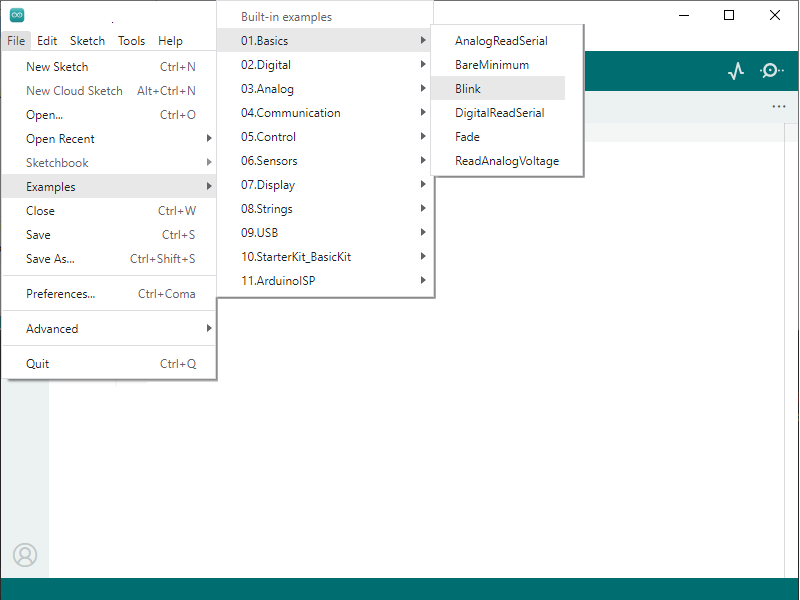
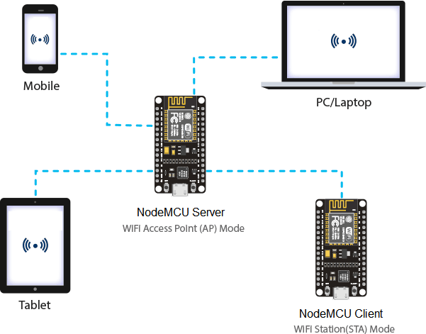

1 - Ejemplo Blink

Abrir el menú File-->Examples-->0.1 Basics y seleccionar el proyecto ejemplo Blink

Modificar el código. En este ejemplo el LED incorporado en la tarjeta cambiará de estado cada segundo (1000 ms).
Cargar el programa al dispositivo ESP32-C3 (verificar que haya seleccionado el puerto correspondiente).
Esperar a que el programa indique que el sketch ha sido subido al dispositivo ESP32-C3.

2 - Visualización display

Abrir el menú de la izquierda LIBRARY MANAGER
Buscar e instalar la librería Adafruit SSD1306

Aceptar INSTALL ALL la instalación de las librerías adicionales Adafruit BusIO y Adafruit GFX Library

Abrir el menú Archivo-->Ejemplos-->Adafruit SSD1306 y seleccionar el proyecto ejemplo ssd1306_128x32_i2c

Ubicar la constante SCREEN_HEIGHT y probar la calidad de la imagen con el parámetro original (32) y luego con el valor 64 como se muestra a continuación:
#define SCREEN_HEIGHT 64 // OLED display height, in pixels
3 - Entradas y salidas digitales

4 - Control motor DC

5 - Control relé electromecánico

Nota: Este circuito funciona con el código del proyecto 4
9 - Contador

10 - Entrada análoga

11 - Salida análoga (PWM)

12 - Comunicación One Wire: sensor DS18B20

Acceder a LIBRARY MANAGER, buscar e instalar la librería DallasTemperature

Aceptar INSTALL ALL la instalación de la librería adicional OneWire

15 - Comunicación One Wire: sensor DHT22

17 - Comunicación serial asíncrona (UART)

Cargar el programa en el dispositivo y abrir el menú Herramientas-->Monitor Serie para visualizar los datos enviados por el dispositivo.


Abrir el menú Herramientas-->Serial Plotter para visualizar gráficamente la señal análoga medida por el dispositivo.


18 - Comunicación serial asíncrona (UART)

Acceder a LIBRARY MANAGER, buscar e instalar la librería ArduinoJson

Descargar y ejecutar el programa COM_TEST para visualizar los datos enviados por el dispositivo.

20 - Modo punto de acceso (Access Point - AP)
En este modo de funcionamiento se creará una red WiFi en la que una placa NodeMCU cumplirá la función de servidor al cual se podrán conectar dispositivos como PC/Laptop, tablet, móviles, otras placas NodeMCU o cualquier otro dispositivo con capacidad de conexión WiFi.


Modificar los parámetros ssid (Nombre de la red WiFi) y password (Contraseña de la red WiFi). Estos parámetros corresponden a la nueva red WiFi que será creada por el dispositivo.
Conexión desde dispositivo móvil
Conectar el móvil al punto de acceso (red WiFi) difundida por el dispositivo.

Abrir en el navegador web la dirección 192.168.4.1

Conexión desde PC
Conectar el PC al punto de acceso (red WiFi) difundida por el dispositivo.

Abrir en el navegador web la dirección 192.168.4.1

Programa App Inventor 2


21 - Modo estación (Station - STA)
En este modo de funcionamiento la placa NodeMCU se conecta a una red WiFi existente. Dentro de ésta red la placa se podrá conectar con dispositivos como PC/Laptop, tablet, móviles, otras placas NodeMCU o cualquier otro dispositivo con capacidad de conexión WiFi.


Modificar los parámetros STASSID (Nombre de la red WiFi) y STAPSK (Contraseña de la red WiFi). Estos parámetros corresponden a una red WiFi existente a la que se conectará el dispositivo.
El dispositivo intentará conectarse a la red inalámbrica configurada y mostrará la dirección IP asignada que le corresponde dentro de la red.
Conexión desde dispositivo móvil
Conectar el PC al mismo punto de acceso (red WiFi) al que está conectado el dispositivo

Abrir en el navegador web la dirección IP asignada al dispositivo.

Conexión desde PC
Conectar el PC al mismo punto de acceso (red WiFi) al que está conectado el dispositivo.

Abrir en el navegador web la dirección IP asignada al dispositivo.

Programa App Inventor 2
Se puede utilizar la misma App del capítulo 2.2.18 (Utilizar la dirección IP asignada al dispositivo).